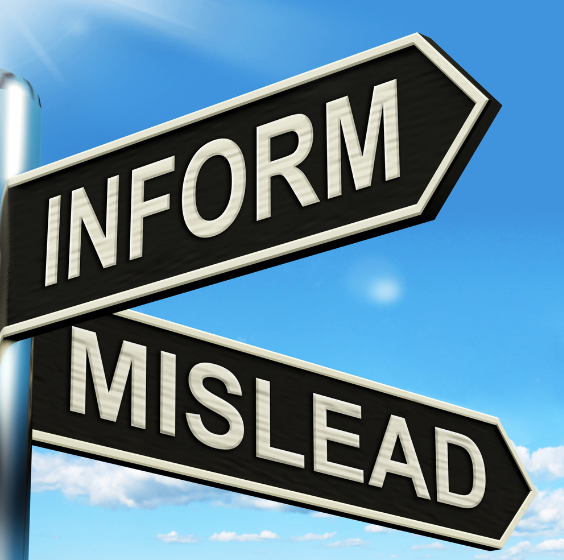

Description
Misinformation is wrong or misleading information.
It differs from disinformation, which is deliberately deceptive and propagated information.The term “misinformation” first appeared in the 16th century, and it can be argued that it included elements of other types of information.
Early definitions of misinformation focused on statements that were patently false, incorrect, or not factual. Therefore, a narrow definition of misinformation refers to the information’s quality, whether inaccurate, incomplete, or false.However, recent studies define misinformation per deception rather than informational accuracy because misinformation can include falsehoods, selective truths, and half-truths. Today, the word is generally used to refer to misleading information created or disseminated without manipulative or malicious intent (Ireton & Posetti, 2018).
Why misinformation Spread online?
Misinformation shared on social media websites has fueled an epidemic of false belief, with widespread misconceptions concerning topics ranging from the COVID-19 pandemic to voter fraud, whether the Sandy Hook school shooting was staged and whether vaccines are safe. The same basic mechanisms that spread fear about the tomato hornworm have now intensified—and, in some cases, led to—a profound public mistrust of basic societal institutions. One consequence is the largest measles outbreak in a generation.
“Misinformation” may seem like a misnomer here. After all, many of today’s most damaging false beliefs are initially driven by acts of propaganda and disinformation, which are deliberately deceptive and intended to cause harm. But part of what makes disinformation so effective in an age of social media is the fact that people who are exposed to it share it widely among friends and peers who trust them, with no intention of misleading anyone. Social media transforms disinformation and misinformation.
Case
An article from the Zimbabwean blog iHarare, published on March 9, falsely claimed that a South African COVID-19 patient was cured. This misinformation was widely shared, with over 2,500 shares tracked by CrowdTangle, and multiple posts on Facebook, including one by an account with over 600,000 followers. The article distorted local media coverage and misleadingly used the term "cure" in reference to the patient's health status.
This claim of a "cure" is misleading, as there is no known cure for COVID-19. Health Minister Dr. Zweli Mkhize clarified that the patient was asymptomatic and awaiting retesting to confirm recovery, not cure. The South African Department of Health and the World Health Organization emphasize that recovery is the correct term, not cure. As of March 11, no recoveries were officially recorded for South Africa by John Hopkins University's data-tracking site.